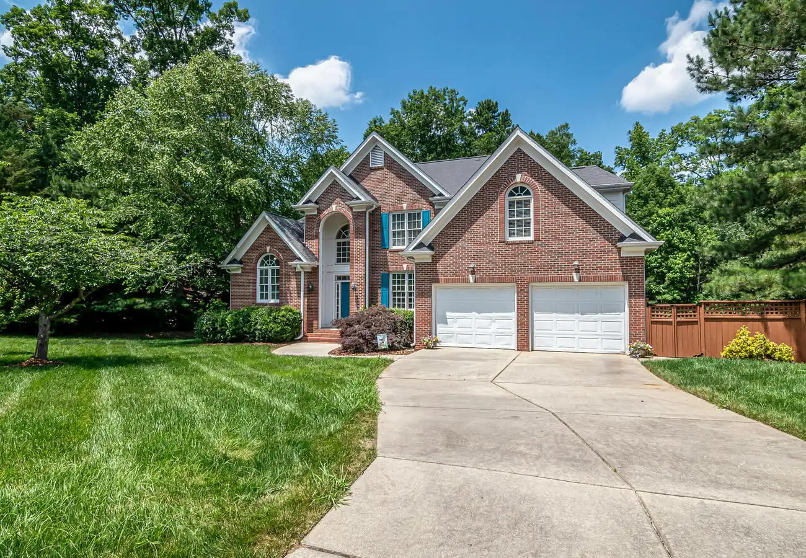

01
In town
The 1876 grid around Main Street. Square lots, the schools a few minutes away, everyday shopping on Main Street. If being able to walk somewhere matters to you, this is the part of Whitney where you can.
Homes in town